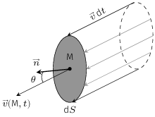
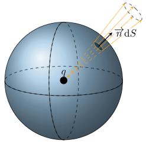
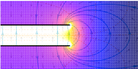

Un conducteur est un système macroscopique qui contient des porteurs de charge libres,
susceptibles de se mettre en mouvement sous l’action d’une force extérieure.
Le courant électrique est le résultat d’un déplacement d’ensemble de particules chargées.
Son intensité \(I\) est donnée par le flux (ou le débit) de charge qui traverse une section
\(S\). Plus précisément, la quantité de charge \(\mathrm{d}q\) qui passe au travers de
\(S\) entre \(t\) et \(t + \mathrm{d}t\) vaut
$$
\quad \boxed{ \mathrm{d}q = I(t)\mathrm{d}t }
$$
L’intensité électrique s’exprime en ampère (symbole : \(\rm{A}\)).
On a donc \(\rm{1\,A = 1\,C.s^{−1}}\)
On peut exprimer l’intensité du courant électrique en fonction des caractéristiques de
l’écoulement des porteurs de charge, à savoir leur vitesse moyenne et leur densité
volumique. Pour simplifier la démonstration, supposons un seul type de porteurs se déplaçant
tous à la vitesse moyenne \(v\). Notons \(\rho\) leur densité volumique de charge (en
\(\rm{C.m^{−3}}\)). Considérons une section \(S\) orientée par la normale
\(\overrightarrow{n}\) et calculons la quantité de charge la traversant pendant une durée
\(\mathrm{d}t\).

Calcul du débit de charge traversant une section.
Tous les porteurs de charge qui traversent l’élément infinitésimal \(\mathrm{d}S\) de la
section à l’instant \(t + \mathrm{d}t\), se trouvaient entre les instants \(t\) et
\(t + \mathrm{d}t\) dans un cylindre de base \(\mathrm{d}S\) et de génératrice
\(\overrightarrow{v}\mathrm{d}t\), dont le volume s’écrit \(\mathrm{d}\tau =
\mathrm{d}S \mathrm{d}t \overrightarrow{v} \cdot \overrightarrow{n}\). Ainsi, la quantité de
charge \(\mathrm{d}^2q\) qui traverse la section \(\mathrm{d}S\) entre \(t\) et
\(t + \mathrm{d}t\) vaut \(\mathrm{d}^2q = \rho\mathrm{d}\tau\). En intégrant sur toute la
section, on trouve
$$
\quad \mathrm{d}q
= \mathrm{d}t \iint_{S} \rho \overrightarrow{v} \cdot \overrightarrow{n} \mathrm{d}S
$$
Mathématiquement, l’intensité s’interprète donc comme le flux d’un vecteur
\( \overrightarrow{j} = \rho \overrightarrow{v}\) appelé densité de courant
électrique :
$$
\quad \boxed{ \begin{aligned}
I(t) & = \iint_{S} \overrightarrow{j} \cdot \overrightarrow{n} \mathrm{d}S \\
[\rm{A}] & = [\rm{A.m^{-2}}] \times [\rm{m^2}]
\end{aligned} }
$$
Si le courant est réparti uniformément, le vecteur densité de courant est constant sur la
section \(S\) et l’intégrale se réduit à :
$$
\quad I = \overrightarrow{j} \cdot \overrightarrow{n} S
$$
Dans le cas où plusieurs porteurs de charge transportent le courant il faut sommer toutes
les contributions :
$$
\quad \boxed{ \overrightarrow{j} = \sum_{i} \rho_i \overrightarrow{v_i} }
$$
Ordres de grandeur
Le tableau ci-dessous donne quelques valeurs d’intensité que l’on rencontre dans le
quotidien.
Quelques ordres de grandeur d’intensité.
Phénomène
Ordre de grandeur
Seuil de perception chez l’humain
\(1\,\rm{mA}\)
Seuil de fibrilisation cardiaque irréversible
\(75\,\rm{mA}\)
Fonctionnement d’une lampe halogène
\(1\,\rm{A}\)
Radiateur électrique
\(10\,\rm{A}\)
Alimentation d’un moteur de locomotive
\(1\,\rm{kA}\)
Courant de foudre
\(1-100\,\rm{kA}\)
Vitesse des porteurs de charge
Estimons la vitesse des porteurs de charge dans une installation domestique.
Par exemple, un fil de cuivre de section \(s = 2,5\,\mathrm{mm^2}\) supporte un courant
d’intensité \(I_{max} = 20\,\mathrm{A}\) (normes françaises). La densité de courant
correspondante vaut
$$
\quad j = \frac{I_{max}}{s} = 8.10^6\,\mathrm{A.m^{-2}}
$$
Le cuivre a pour densité \(d=8,96\) et une masse molaire atomique \(m=63,5\,
\mathrm{g/mole}\). De plus, chaque atome de cuivre libère un électron libre. Ainsi,
\(1\,\mathrm{m^3}\) de cuivre pèse \(8,96.10^3\,\mathrm{kg}\) ce qui correspond à
\(8,96.10^{3}/63,5.10^{−3}\,mole\) de cuivre. La densité volumique des porteurs de charge
vaut donc
$$
\quad \rho = \frac{8,96.10^{3}}{63,5.10^{−3}} \times 6,02.10^{23} \times 1,6.10^{-19}
= 1,4.10^{10}\,\mathrm{C.m^{-3}}
$$
La vitesse moyenne des électrons est alors donnée par
$$
\quad v = \frac{j}{\rho} = 0,6\,\mathrm{mm.s^{-1}}
$$
La vitesse moyenne correspondant au transport de l’électricité est très faible devant la
vitesse d’agitation thermique qui est de l’ordre de \(10^5\,\mathrm{m.s^{−1}}\). On peut
aussi noter que si le fil est traversé par un courant alternatif de fréquence \(f = 50\,
\mathrm{Hz}\) et d’intensité maximum \(20\,\mathrm{A}\), le déplacement moyen des électrons
libres oscillera avec une amplitude
$$
\quad A = \frac{v}{2\pi f} = \frac{6.10^{-4}}{100\pi} \simeq 2\,\mathrm{\mu m}
$$
Loi d’Ohm locale
Un conducteur soumis à un champ électrique \(\overrightarrow{E}\) est le siège d’un courant
électrique de densité de courant
$$
\quad \boxed{ \overrightarrow{j} = \gamma \overrightarrow{E} }
$$
où \(\gamma\) désigne la conductivité électrique et s’exprime en siemens par mètre.
Elle dépend du conducteur, de la température et de la pression. Par exemple,dans les métaux,
\(\gamma\) diminue quand la température augmente.
Le tableau ci-dessous donne quelques valeurs de conductivité électrique.
Ordres de grandeur de conductivités électriques.
Bons conducteurs
Mauvais conducteurs
Isolants
Substance
\(\gamma\;(\mathrm{S.m^{-1}})\)
Substance
\(\gamma\;(\mathrm{S.m^{-1}})\)
Substance
\(\gamma\;(\mathrm{S.m^{-1}})\)
Argent
\(6,1.10^7\)
Eau de mer
\(0,2\)
Huile minérale
\(2.10^{-11}\)
Cuivre
\(5,8.10^7\)
Silicium
\(4,3.10^{-4}\)
Verre Pyrex
\(10^{-15}\)
Or
\(4,5.10^7\)
Eau distillée
\(2.10^{-4}\)
Quartz
\(2.10^{-17}\)
Modèle de Drude
En 1900, Paul Drude propose un modèle classique qui explique qualitativement la conduction
électrique. Ce modèle repose sur les hypothèses suivantes :
Approximation des électrons libres : les électrons de conduction forment un gaz
parfait de particules chargées indépendantes (malgré la présence des ions métalliques). En
l’absence de champ extérieur, ces électrons libres ne ressentent aucune force en moyenne
et se déplacent en ligne droite du fait de l’agitation thermique.
Les électrons sont diffusés par les défauts cristallins. Après chaque collision, la
vitesse est redistribuée de façon aléatoire.
Le temps de libre parcours moyen ou temps de relaxation \(\tau\) est la durée moyenne
entre 2 collisions. \(\tau\) est indépendant de la vitesse des électrons. Son ordre de
grandeur est \(10^{-14}\,\rm{s}\).
Modèle de Drude.
Dans ce modèle, entre deux collisions, la vitesse d’un électron soumis à un champ électrique
extérieur \(\overrightarrow{E}\), vérifie la seconde loi de Newton (modèle
classique) :
$$
\quad m_e \frac{\mathrm{d}\overrightarrow{v}}{\mathrm{d}t} = -e \overrightarrow{E}
$$
soit
$$
\quad \overrightarrow{v} = - \frac{e\overrightarrow{E}}{m_e}t + \overrightarrow{v_0}
$$
où \(\overrightarrow{v_0}\) désigne la vitesse après la dernière collision et \(t\) le temps
compté à partir de la dernière collision. Le courant étant lié au mouvement d’ensemble, il
faut effectuer une moyenne sur l’ensemble des électrons au même instant.
$$
\quad \overrightarrow{v}_{moy}
= - \frac{e\overrightarrow{E}}{m_e} \langle t \rangle
+ \left\langle \overrightarrow{v_0} \right\rangle
$$
Or, la vitesse étant redistribuée dans toutes les directions après chaque collision, ceci de
façon aléatoire, on a \(\left\langle\overrightarrow{v_0}\right\rangle=\overrightarrow{0}\).
De plus, la moyenne \(\langle t \rangle\) correspond à la moyenne des temps de collision
c’est-à-dire \(\tau\). Finalement, on obtient une vitesse d’ensemble
$$
\quad \overrightarrow{v}_{moy} = - \frac{e\tau}{m_e} \overrightarrow{E}
$$
La vitesse d’ensemble est proportionnelle au champ électrique. Le coefficient de
proportionnalité s’appelle la mobilité \(\mu\) :
$$
\quad \overrightarrow{v}_{moy} = \mu \overrightarrow{E}
$$
Si l’on note \(n\) la densité d’électrons libres (en \(\rm{m^{-3}}\)), on voit que le
vecteur densité de courant est proportionnel au champ électrique et s’écrit
$$
\quad \overrightarrow{j} = ne\overrightarrow{v}_{moy}
= \frac{ne^2\tau}{m_e} \overrightarrow{E}
$$
On retrouve donc la loi d’Ohm locale
$$
\quad \overrightarrow{j} = \gamma \overrightarrow{E}
= \frac{ne^2\tau}{m_e}\overrightarrow{E}
$$
Ce modèle permet d’expliquer, par exemple, pourquoi la conductivité des métaux diminue quand
la température augmente. En effet, lorsque l’on chauffe un métal, les vibrations du réseau
s’amplifient ce qui augmente la probabilité qu’il y ait collision et donc diminue le temps
de relaxation.
Notion de résistance
Pour introduire la notion de résistance d’un conducteur, considérons un cylindre conducteur
de longueur \(\ell\), de diamètre \(d\) et donc de section droite \(s=\pi d^2/4\), soumis à
une tension électrique \(U\) entre ses extrémités.
Cylindre conducteur.
Faisons l’hypothèse que le courant électrique est uniforme sur la section et axial. La
section étant constante, la densité de courant est constante le long du cylindre. De plus,
la relation \(j = \gamma E\)implique que le champ électrique est axial et constant le long
du conducteur.
L’intensité électrique vaut alors \(I = js = \gamma E s\) et la tension électrique entre les
extrémités vaut \(U = E\ell\).
Le rapport des deux relations permet d’obtenir la loi d’Ohm pour un fil conducteur
cylindrique :
$$
\quad \boxed{ U = \frac{1}{\gamma}\frac{\ell}{s} \times I = R \times I }
$$
De manière générale, la loi \(U=RI\) constitue la loi d’Ohm intégrale et \(R\) désigne la
résistance du conducteur dont l’expression dépend de la conductivité et de la géométrie. La
résistance s’exprime en ohm (symbole \(\rm{\Omega}\)).
Conducteurs en équilibre électrostatique
On s’intéresse dorénavant à l’équilibre de conducteurs électrisés (chargés) placés dans le
vide.
Propriétés des conducteurs en équilibre
À l’équilibre, un conducteur n’est soumis à aucun mouvement macroscopique. Notamment, il
n’y a pas de courant électrique macroscopique. Par conséquent,
$$
\quad \overrightarrow{j} = \overrightarrow{0}
$$
Bien évidemment, à l’échelle de l’atome les électrons sont en mouvement, mais à l’échelle
mésoscopique ces mouvements incessants se compensent en moyenne. Donc, selon la loi d’Ohm,
il ne règne aucun champ électrique au sein du conducteur :
$$
\quad \overrightarrow{E}_{int} = \overrightarrow{0}
$$
Insistons sur le fait qu’il s’agit ici du champ électrique local moyenné à l’échelle
mésoscopique. Bien entendu, à l’échelle de l’atome, règne un champ électrique extrêmement
important et fluctuant.
À l’intérieur du conducteur, le potentiel doit vérifier
$$
\quad \overrightarrow{E}_{int} =
-\overrightarrow{\mathrm{grad}}V_{int} = \overrightarrow{0}
$$
soit
$$
\quad V_{int} = C^{te}
$$
Le potentiel électrique est uniforme au sein du conducteur à l’équilibre. Autrement dit,
le conducteur à l’équilibre est un volume équipotentiel. Les lignes de champ
électrique étant perpendiculaires aux équipotentielles, on voit ici que le champ électrique
au voisinage extérieur du conducteur est normal à la surface.
En vertu du théorème de Gauss, que nous verrons ultérieurement, le fait que le champ
électrique soit nul à l’intérieur du conducteur implique que la densité de charge volumique
est nulle partout (\(\rho_{int}=0\)). Cela signifie que tout apport de charge à un
conducteur va se répartir à la surface de celle-ci de façon à créer un champ électrique nul
à l’intérieur. On caractérise alors le conducteur par sa distribution de charge surfacique
\(\sigma(P)\) où \(P\) désigne un point de la surface du conducteur. Le champ électrique à
la surface du conducteur dépend donc de la manière dont se répartissent les charges en
surface.
En résumé, un conducteur à l’équilibre électrostatique vérifie les propriétés
suivantes :
$$
\quad \boxed{ \begin{aligned}
\overrightarrow{E}_{int} &= \overrightarrow{0} \\
V_{int} &= C^{te} \\
\rho_{int} &= 0
\end{aligned} }
$$
Théorème de Coulomb
Plaçons-nous à l’extérieur d’un conducteur à l’équilibre tout en restant dans le voisinage
immédiat d’un point \(P\) de sa surface. Dans ce cas, le champ électrique produit ne dépend
que de la densité surfacique en ce point. C’est ce qu’énonce le théorème de Coulomb.
Champ au voisinage de la surface d’un conducteur.
Pour le montrer, plaçons-nous en un point \(M\) au voisinage d’un conducteur. On peut
considérer que le champ créé en \(M\) est le résultat de deux contributions :
$$
\quad \overrightarrow{E}_{ext}(M) = \overrightarrow{E_1}(M) +\overrightarrow{E_2}(M)
$$
où \(\overrightarrow{E_1}\) est le champ créé par une portion de conducteur suffisamment
petite pour qu’on puisse l’assimiler à un plan tangent, et \(\overrightarrow{E_2}\) celui dû
au reste du conducteur. On a vu qu’un plan infini uniformément chargé produit un champ
électrique \(\overrightarrow{E} = \sigma/2\varepsilon_0 \overrightarrow{n}\) où
\(\overrightarrow{n}\)est le vecteur normal au plan. Ce résultat reste valide pour un plan
fini de taille caractéristique \(L\) tant que l’on se place à une distance \(d \ll L\) du
plan. Supposons donc \(M\) suffisamment proche du conducteur pour autoriser cette
approximation puis notons \(\overrightarrow{n}_{ext}\) le vecteur unitaire normal à la
surface du conducteur et dirigé vers l’extérieur. On a donc
$$
\quad \overrightarrow{E}_{ext}(M)
= \frac{\sigma(P)}{2\varepsilon_0}\overrightarrow{n}_{ext} + \overrightarrow{E_2}(M)
$$
Par ailleurs, si l’on considère le point \(M^{\prime}\) symétrique de \(M\) par la symétrie
plane passant par \(P\), on a également
$$
\quad \overrightarrow{E}_{int}(M^{\prime})
= \frac{\sigma(P)}{2\varepsilon_0}\overrightarrow{n}_{ext}
+ \overrightarrow{E_2}(M^{\prime})
$$
Nous savons qu’à l’intérieur du conducteur le champ électrique est nul ce qui implique
\(\overrightarrow{E_2}(M^{\prime})=\sigma(P)/\varepsilon_0\,\overrightarrow{n}_{ext}\).
Or, par continuité, \(\overrightarrow{E_2}(M^{\prime}) = \overrightarrow{E_2}(M)\) puisque
\(M\) et \(M^{\prime}\) sont infiniment voisins. Finalement, on trouve
\( \overrightarrow{E}_{ext} = \frac{\sigma(P)}{\varepsilon_0}\overrightarrow{n}_{ext} \).
Théorème de Coulomb
Dans un conducteur à l’équilibre, le champ électrique intérieur est nul, le potentiel
électrique est uniforme et les charges se répartissent à la surface du conducteur. Il règne
alors au voisinage immédiat de la surface chargée (et à l’extérieur) un champ
électrique :
$$
\quad \boxed{ \overrightarrow{E}_{ext}
= \frac{\sigma(P)}{\varepsilon_0}\overrightarrow{n}_{ext} }
$$
Le théorème de Gauss
Énnoncé et demonstration
Le théorème de Gauss est un théorème très général qui relie le flux électrique et la
quantité de charge électrique.
Par définition, le flux du champ électrique \(\overrightarrow{E}\) à travers une surface
fermée \(S\) vaut
$$
\quad \phi \overset{def}{=}
\bigcirc\!\!\!\!\!\!\!\!\iint_S \overrightarrow{E}(M)\cdot\overrightarrow{n}\mathrm{d}S
$$
où \(\overrightarrow{n}\) désigne un vecteur unitaire perpendiculaire à la surface en \(M\)
et dirigé vers l’extérieur.
Pour introduire le théorème de Gauss, calculons le flux du champ électrique créé par une
charge ponctuelle, à travers une sphère de rayon \(r\) centrée sur la charge. Le champ
électrique en un point \(M\) de la surface sphérique vaut
$$
\quad \overrightarrow{E}(M) = \frac{q}{4\pi\varepsilon_0r^2}\overrightarrow{u_r}
$$
où \(\overrightarrow{u_r}\) est le vecteur unitaire du système sphérique.

Calcul du flux du champ électrique que crée une charge ponctuelle à travers une
sphère de rayon \(r\).
La normale à la surface est également suivant \(\overrightarrow{u_r}\) de sorte que le flux
s’écrit
$$
\quad \phi
= \bigcirc\!\!\!\!\!\!\!\!\iint_S \frac{q}{4\pi\varepsilon_0r^2}
\overrightarrow{u_r} \cdot \overrightarrow{n} \mathrm{d}S
= \frac{q}{4\pi\varepsilon_0r^2} \bigcirc\!\!\!\!\!\!\!\!\iint_S \mathrm{d}S
= \frac{q}{\varepsilon_0}
$$
Autrement dit, le flux est proportionnel à la quantité de charge enfermée par la sphère mais
ne dépend pas de la taille de la sphère. On peut se demander ce que devient le flux lorsque
la surface qui enferme la charge n’est plus sphérique. On trouve un résultat surprenant
puisque le flux reste identique : tant que la surface englobe la charge, \(\phi =
q/\varepsilon_0 \). En revanche, si la surface n’englobe pas la charge, on obtient toujours
\(\phi =0\).
Si maintenant on envisage une distribution quelconque de charges et une surface fermée
\(S\) englobant une partie des charges, seule la quantité de charge \(q_{int}\) intérieure à
\(S\) contribue au flux : c’est le sens du théorème de Gauss.
Théorème de Gauss
Le flux du champ électrostatique à travers une surface fermée quelconque, est proportionnel
à la quantité de charge enfermée par cette surface. La constante de proportionnalité vaut,
dans le Système international, \(1/\varepsilon_0\).
$$
\quad \boxed{ \phi =
\bigcirc\!\!\!\!\!\!\!\!\iint_S \overrightarrow{E}(M)\cdot\overrightarrow{n}\mathrm{d}S
= \frac{Q_{int}}{\varepsilon_0} }
$$
Compatibilité avec le théorème de Coulomb
On peut vérifier que le théorème de Gauss est bien compatible avec le théorème de
Coulomb.
Imaginons que la surface \(S\) englobe un conducteur quelconque de charge totale \(q\) de
façon à ce qu’elle soit infiniment proche de la surface du conducteur. D’après le théorème
de Coulomb, \(E=\sigma(P)/\varepsilon_0\overrightarrow{n}\) de sorte que
$$
\quad \phi =
\bigcirc\!\!\!\!\!\!\!\!\iint_S \overrightarrow{E}\cdot\overrightarrow{n}\mathrm{d}S
= \frac{1}{\varepsilon_0} \bigcirc\!\!\!\!\!\!\!\!\iint_S \sigma(P) \mathrm{d}S
= \frac{q}{\varepsilon_0}
$$
ce qui est bien conforme au théorème de Gauss.
Conséquences
Isolons par la pensée un petit volume \(V\) situé à l’intérieur d’un conducteur à
l’équilibre. Le champ électrique y étant nul, son flux à travers la surface qui délimite
\(V\) est également nul. Par conséquent, la charge intérieure au volume est nulle. Ainsi, on
peut affirmer que tout volume (mésoscopique) contient une charge nulle, ce qui revient à
dire que la densité volumique de charge est partout nulle, à l’intérieur d’un
conducteur ; ce qui démontre une des propriétés des conducteurs à l’équilibre.
Considérons maintenant une sphère conductrice chargée (charge \(q\) de rayon \(R\).
Par symétrie, la charge se répartie uniformément en surface d’où une densité surfacique
constante \(\sigma = q/(4\pi R^2)\). On connait le champ électrique au voisinage de la
sphère, mais que vaut-il à une distance \(r\) quelconque ? our cela il suffit d’appliquer le
théorème de Gauss en choisissant pour surface fermée \(S\) la sphère de rayon \(r\) et de
même centre que le conducteur. On a
$$
\quad \phi =
\bigcirc\!\!\!\!\!\!\!\!\iint_S \overrightarrow{E}\cdot\overrightarrow{n}\mathrm{d}S
= \bigcirc\!\!\!\!\!\!\!\!\iint_S E \mathrm{d}S
$$
car \(\overrightarrow{E}\) est colinéaire à \(\overrightarrow{n}=\overrightarrow{u_r}\)
compte tenu de la symétrie sphérique. Par ailleurs, l’invariance par rotation implique que
le champ ne dépend que de \(r\). Ainsi, \(E\) est constant le long de la surface sphérique
d’intégration. Il vient alors
$$
\quad \phi = \bigcirc\!\!\!\!\!\!\!\!\iint_S E \mathrm{d}S
= E \bigcirc\!\!\!\!\!\!\!\!\iint_S \mathrm{d}S
= E 4\pi r^2
$$
Du théorème de Gauss, il découle donc
$$
\quad \overrightarrow{E}
= \frac{q}{4\pi\varepsilon_0 r^2} \overrightarrow{u_r} \quad / \quad r \gt R
$$
Autrement dit, une boule conductrice de charge \(q\) produit à l’extérieur le même champ
qu’une charge ponctuelle \(q\) située en son centre.
Supposons maintenant un conducteur enfermant une cavité dans laquelle se trouve une charge
ponctuelle \(q\). Le caractère ponctuel n’a pas d’importance ici ; il pourrait très
bien s’agir d’un petit volume quelconque chargé. Cette charge a pour effet d’attirer ou de
repousser (ça dépend de son signe) les électrons libres du conducteur de sorte que la
surface interne du conducteur présente une distribution de charge \(q^{\prime}\). Pour
trouver \(q^{\prime}\), il suffit d’utiliser le théorème de Gauss en choisissant une
surface fermée entourant la cavité et située dans le conducteur. Puisqu’en tout point de la
surface de Gauss le champ électrique est nul, alors le flux électrique l’est également. Par
conséquent, en vertu du théorème de Gauss, \(q+q^{\prime}=0\) : la surface interne
se remplit d’une charge opposée ; c’est ce qu’on appelle l’influence totale.
Si maintenant on retire la charge \(q\), dans ce cas \(q^{\prime}=0\). Il est facile de
montrer que la densité de charge est partout nulle sur la surface interne du conducteur. En
effet, si la surface interne présente une distribution de charge alors elle contient des
charges + et - (puisque \(q^{\prime}=0\)). Les lignes de champ partiraient alors des charges
+ pour rejoindre les charges - (elles ne peuvent pas s’arrêter dans la cavité puisqu’il n y
a pas de charges). Dans ce cas, on aurait des lignes de champ qui partiraient d’un point
porté au même potentiel que le point d’arrivée. Or, par nature \(\overrightarrow{E} =
-\overrightarrow{\mathrm{grad}}V\), une ligne de champ ne peut visiter que des points de
potentiel décroissant, ce qui infirme l’hypothèse de départ. Finalement, dans une cavité
vide de charge, la surface interne est également vide de charge ce qui implique un champ nul
et un potentiel constant et égal à celui du conducteur. Cela signifie par exemple que tout
perturbation électrique produite à l’extérieure du conducteur n’a strictement aucune action
à l’intérieur de la cavité : c’est l’effet cage de faraday.
Notion de capacité
Capacité d’un conducteur
Définition
Portons un conducteur \(\mathcal{C}\) au potentiel \(V_0\) et notons la charge \(Q_0\) qui
se répartit en surface. Ce conducteur produit à l’extérieur un potentiel
$$
\quad V(M) = \iint \frac{ \sigma \mathrm{d}S }{ 4\pi\varepsilon_0r }
$$
en prenant comme convention \(V(\infty)=0\). Les charges se répartissent donc de façon à ce
que \(V(M)=V_0\) pour tout point \(M \in \mathcal{C}\).
Définissons maintenant un potentiel \(V^{\prime} = \lambda V(M)\) avec \(\lambda\) un nombre
réel. Ce potentiel vérifie la condition aux limites \(V^{\prime}(M \in \mathcal{C}) =
\lambda V_0\). C’est donc le potentiel produit par le conducteur mis au potentiel
\(V^{\prime}_0 = \lambda V_0\). Notons \(\sigma^{\prime}\) la nouvelle distribution de
charges. On a
$$
\quad V^{\prime}(M) = \iint \frac{ \sigma^{\prime} \mathrm{d}S }{ 4\pi\varepsilon_0r }
= \lambda V(M) = \lambda \iint \frac{ \sigma \mathrm{d}S }{ 4\pi\varepsilon_0r }
\quad \forall M
$$
ce qui implique que
$$
\quad \sigma^{\prime} = \lambda \sigma
$$
soit
$$
\quad Q^{\prime}_0 = \lambda Q_0
$$
Autrement dit, le rapport
$$
\quad \boxed{ \frac{Q^{\prime}_0}{V^{\prime}_0} = \frac{Q_0}{V_0} = C \gt 0}
$$
est une constante caractéristique de la géométrie du conducteur. \(C\) désigne la capacité
du conducteur seul. Elle mesure la capacité d’un conducteur à stocker une quantité de charge
sous un potentiel électrique donné. La capacité se mesure en farad (\(\rm{F}\)).
Exemple : capacité d’un conducteur sphérique
Lorsque l’on porte un conducteur sphérique au potentiel \(V_0\), du fait de la symétrie
sphérique, les charges se répartissent de façon uniforme : \(\sigma\) est constant.
Le potentiel électrique \(V_c\) produit au centre de la boule se calcule aisément :
$$
\quad V_c = \iint \frac{ \sigma \mathrm{d}S }{ 4\pi\varepsilon_0 R }
= \frac{ Q_0 }{ 4\pi\varepsilon_0R }
$$
La capacité d’un conducteur sphérique s’écrit donc
$$
\quad C = \frac{Q_0}{V_0} = \frac{Q_0}{V_c} = 4\pi\varepsilon_0 R
$$
La capacité d’une boule conductrice est proportionnelle à son rayon.
Notez que si l’on prend un conducteur sphérique de rayon égal au rayon de la Terre, on
trouve une capacité \(\rm{C}=0,7\,\rm{mF}\), ce qui montre que le farad n’est pas une unité
très adaptée ; aussi utilise-t-on ses sous multiples.
Les condensateurs
Considérons deux conducteurs \(\mathcal{C}_1\) et \(\mathcal{C}_2\). On électrise
\(\mathcal{C}_1\) en le portant aupotentiel \(V_1\) : ils’entoure alors d’une charge
\(Q_1\) (positivement pour fixer les idées). Quant à \(\mathcal{C}_2\), il est neutre.
Approchons maintenant le conducteur chargé vers le conducteur neutre : le champ
électrique créé par \(\mathcal{C}_1\) éloigne alors les charges positives et attire les
charges négatives. Ainsi, \(\mathcal{C}_2\) se recouvre d’une distribution de charge non
uniforme telle que \(\int \sigma \mathrm{d}S=0\).
Influence partielle.
Si maintenant,le conducteur \(\mathcal{C}_2\) est mis à la Terre (\(V_2=0\)), les charges
positives vont être neutralisées par des charges provenant de la Terre. Le résultat est que
le conducteur \(\mathcal{C}_2\) se charge négativement : on dit que le conducteur
s’est chargé par influence partielle. On a la relation
$$
\quad Q_2 = C_{21}V_1
$$
où \(C_{21} \lt 0\) désigne le coefficient d’influence.
Examinons maintenant le cas particulier où le conducteur \(\mathcal{C}_2\) entoure
\(\mathcal{C}_1\). Dans cette configuration, toutes les lignes de champ issues de
\(\mathcal{C}_1\) arrivent nécessairement sur \(\mathcal{C}_2\). La surface intérieure de
\(\mathcal{C}_2\) se recouvre d’une charge \(Q_{2\,int}\) de signe opposé à celle que
contient \(\mathcal{C}_1\). Par ailleurs, en vertu du théorème de Gauss (faire le même
raisonnement que dans l’exemple du § précédent) on a
$$
\quad Q_1 = Q_{2\,int}
$$
On parle d’influence totale et l’ensemble des deux conducteur forme alors ce que l’on
appelle un condensateur constitué de deux armatures conductrices.
La capacité d’un condensateur mesure l’aptitude à stocker une quantité de charge sur
l’armature interne. En effet, on montre que si l’on soumet le condensateur à une tension
\(U=V_1-V_2\), l’armature interne se recouvre d’une charge
$$
\quad \boxed{ Q_1 = CU }
$$
où \(C\) mesure la capacité du condensateur et ne dépend que de sa géométrie. La capacité
d’un condensateur se mesure, comme la capacité d’un conducteur, en farad (symbole :
\(\mathrm{F}\)). L’ordre de grandeur de \(C\) est variable : d’environ
\(10^{-12}\,\mathrm{F}\) à \(10^{-3}\,\mathrm{F}\).
Capacité d’un condensateur plan
On forme un condensateur plan en approchant deux conducteurs plans soumis à une différence
de potentiel. Sur la figure ci-dessous, l’armature du bas est soumise à un potentiel positif
\(V_+\) et celle du haut à un potentiel \(V_-\) de sorte que la tension qui règne entre les
armatures vaut \(U = V_+ - V_-\). Sur les faces en regard se condensent des charges de signe
opposé : on a influence totale.
Carte de champ d’un condensateur plan.
En revanche, sur les faces externes des armatures, la densité de charge est quasi nulle.
En effet, comme on peut le voir sur la carte d’intensité du champ, le champ électrique est
intense entre les armatures et quasi-nul à l’extérieur. On remarque également qu’entre les
armatures, les lignes de champ sont rectilignes ce qui signifie que le champ est uniforme
commeon peut également le voir sur la carte d’intensité. Notez enfin ce qui se passe aux
bords des armatures : les charges ont tendance à se concentrer sur les bords par
effets de pointe, ce qui explique la valeur intense du champ près des bords. Le caractère
uniforme du champ n’est donc valable qu’entre les armatures et tant qu’on reste éloigné des
bords.

Effets de bord d’un condensateur plan.
Calculons la capacité de ce condensateur en supposant les armatures suffisamment proches
pour pouvoir utiliser le théorème de Coulomb. Le champ électrique qui règne entre les
armatures vaut donc \(\overrightarrow{E}=\sigma / \varepsilon_0 \overrightarrow{n_{ext}}\).
La tension qui règne entre les armattures s’obtient en intégrant ce champ le long d’une
ligne de champ :
$$
\quad U = V_+ - V_- = \int_{A_+}^{A_-}
\overrightarrow{E} \cdot \overrightarrow{\mathrm{d}\ell}
= \frac{\sigma}{\varepsilon_0}e
$$
où \(e\) désigne l’espacement entre les armatures.
De plus, si l’on néglige les effets de bord, on peut considérer que la répartition des
charges est uniforme, d’où \(Q = \sigma S\) avec \(S\) l’aire de chaque face en regard et
\(\pm Q\) les charges des faces en influence totale. Ainsi, on trouve
$$
\quad Q = \frac{\varepsilon_0 S}{e} U
$$
Un condensateur plan, possède donc une capacité
$$
\quad \boxed { C = \frac{\varepsilon_0 S}{e} }
$$
La relation obtenue indique que plus l’espacement est petit, plus le phénomène de
condensation est important.
Rôle du diélectrique
La formule précédente est valable si l’espace inter-armatures est vide. En pratique, on
enroule deux rubans métalliques (aluminium ou étain) jouant le rôle des armatures, que l’on
sépare par deux rubans isolants (papier paraffiné, plastique). La présence de cet isolant,
dit diélectrique, a pour effet d’augmenter la capacité du condensateur formé suite au
phénomène de polarisation électrique. On montre que la capacité s’écrit sous la forme
$$
\quad C = \frac{\varepsilon S}{d}
$$
avec
$$
\quad \varepsilon = \varepsilon_0 \times \varepsilon_r
$$
où \(\varepsilon_r\) désigne la permittivité diélectrique relative qui dépend du matériau
diélectrique utilisé.
Permittivités diélectriques relatives de quelques matériaux.
Diélectrique
\(\varepsilon_r\)
vide
\(1\)
air
\(1,0006\)
paraffine
\(2,5\) à \(3,5\)
huile
\(4\)
verre
\(5\) à \(10\)
mica
\(3\) à \(6\)
bois
\(2,5\) à \(8\)
porcelaine
\(6\)
glycérine
\(56\)
eau pure
\(81\)
Énergie stockée par un condensateur
Par définition, l’énergie d’un condensateur chargé \(W_E\) est l’énergie qu’il est
susceptible de libérer lors de sa décharge, c’est-à-dire lors qu’on ramène sa tension à zéro
en reliant les deux armatures par un fil conducteur, par exemple.
Considérons l’armature interne au potentiel \(V_A\) et portant une charge \(Q\). L’armature
externe soumise au potentiel \(V_B\) porte ,quant à elle, une charge interne \(-Q\) et une
charge externe \(Q'\) qui ne dépend que du potentiel \(V_B\).
Lorsque le condensateur est chargé, l’énergie électrostatique du système de charge
vaut :
$$
\quad \mathcal{E_1} = \frac{1}{2} \sum_i q_iV_i
= \frac{1}{2}\left( QV_A - QV_B + Q'V_B\right)
$$
On décharge le condensateur en augmentant le potentiel \(V_A\) à la valeur \(V_B\) :
il n’y a plus de charge en influence mais il reste éventuellement une charge \(Q'\) sur la
face externe de l’armature :
$$
\quad \mathcal{E_2} = \frac{1}{2} \sum_i q_iV_i
= \frac{1}{2}Q'V_B
$$
Par définition, l’énergie électrostatique du condensateur \(W_E\) vaut
$$
\quad \boxed{ W_E =\mathcal{E_1}-\mathcal{E_2} =\frac{1}{2}QU_{AB} =\frac{1}{2}CU_{AB}^2 }
$$